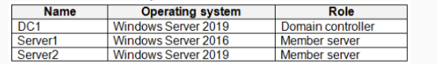
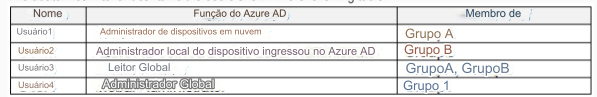
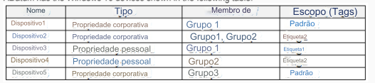
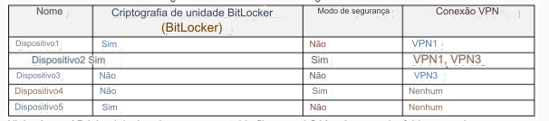
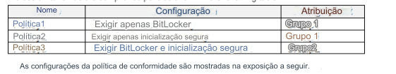
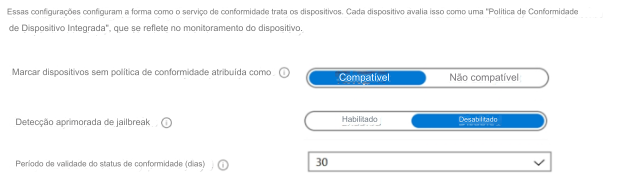

1- PONTO DE ACESSO -
Estudo de caso -
Visão geral -
ADatum Corporation é uma empresa de consultoria com sede em Montreal e filiais em
Seattle e Nova York.
ADatum tem uma assinatura do Microsoft 365 E5.
Ambiente -
Ambiente de rede -
A rede contém um domínio local do Active Directory chamado adatum.com.
O domínio contém os
servidores mostrados na tabela a seguir.

ADatum tem um locatário híbrido do Azure AD chamado adatum.com.
Usuários e grupos -
O locatário adatum.com contém os usuários mostrados na tabela a seguir.

Todos os usuários recebem uma licença do Microsoft Office 365 e uma licença Enterprise Mobility + Security E3.
O Enterprise State Roaming está habilitado para Grupo1 e GrupoA.
O Grupo1 e o Grupo2 têm um tipo de associação Atribuído.
Dispositivos -
ADatum possui os dispositivos Windows 10 mostrados na tabela a seguir.
Os dispositivos Windows 10 estão associados ao Azure AD e inscritos no Microsoft Intune.
Os
dispositivos Windows 10 são configurados conforme mostrado na tabela a seguir.

Os dispositivos Windows 10 estão associados ao Azure AD e inscritos no Microsoft Intune.
Os
dispositivos Windows 10 são configurados conforme mostrado na tabela a seguir.

Todos os dispositivos ingressados no Azure AD têm um arquivo executável chamado C:\AppA.exe e uma pasta chamada
D:\Folder1.
Configuração do Microsoft Intune -
O Microsoft Intune tem as políticas de conformidade mostradas na tabela a seguir.


As configurações de Inscrição Automática possuem as seguintes configurações:
Escopo do usuário MDM: GrupoA -
Escopo do usuário MAM: GrupoB -
Você tem um perfil de configuração do Endpoint Protection que tem o seguinte acesso controlado à pasta
configurações:
Nome: Proteção1 -
Proteção de pasta: Ativar -
Lista de aplicativos que têm acesso a pastas protegidas: C:\*\AppA.exe
Lista de pastas adicionais que precisam ser protegidas: D:\Folder1
Atribuições:
Grupos incluídos: Grupo2, GrupoB -
Configuração do piloto automático do Windows -
ADatum tem um perfil de implantação do Windows Autopilot configurado conforme mostrado na exposição a seguir.

Atualmente, não há dispositivos implantados usando o Windows Autopilot.
O conector do Intune para Active Directory está instalado no Servidor1.
Requisitos -
Mudanças planejadas -
ADatum planeja implementar as seguintes mudanças:
Compre um novo dispositivo Windows 10 chamado Device6 e registre-o no Intune
Novos computadores serão implantados usando o Windows Autopilot e serão ingressados no Azure AD híbrido.
Implantado um perfil de configuração de limite de rede que terá as seguintes configurações:
Nome: Limite1 -
Limite da rede: 192.168.1.0/24
Tags de escopo: Tag1 -
Atribuições:
Grupos incluídos: Grupo1, Grupo2 -
Implante dois perfis de configuração VPN chamados Connection1 e Connection2 que terão o seguinte
configurações:
Nome: Conexão1 -
Nome da conexão: VPN1 -
Tipo de conexão: L2TP -
Atribuições:
Grupos incluídos: Grupo1, Grupo2, GrupoA
Grupos excluídos: --
Nome: Conexão2 -
Nome da conexão: VPN2 -
Tipo de conexão: IKEv2 -
Atribuições:
Grupos incluídos: GrupoA -
Grupos excluídos: GrupoB -
Requerimentos técnicos -
ADatum deve atender aos seguintes requisitos técnicos:
Os usuários do Grupo A devem poder implantar novos computadores.
O esforço administrativo deve ser minimizado.
Para cada uma das afirmações a seguir, selecione Sim se a afirmação for verdadeira.
Caso contrário, deixe em branco.
NOTA: Cada seleção correta vale um ponto.